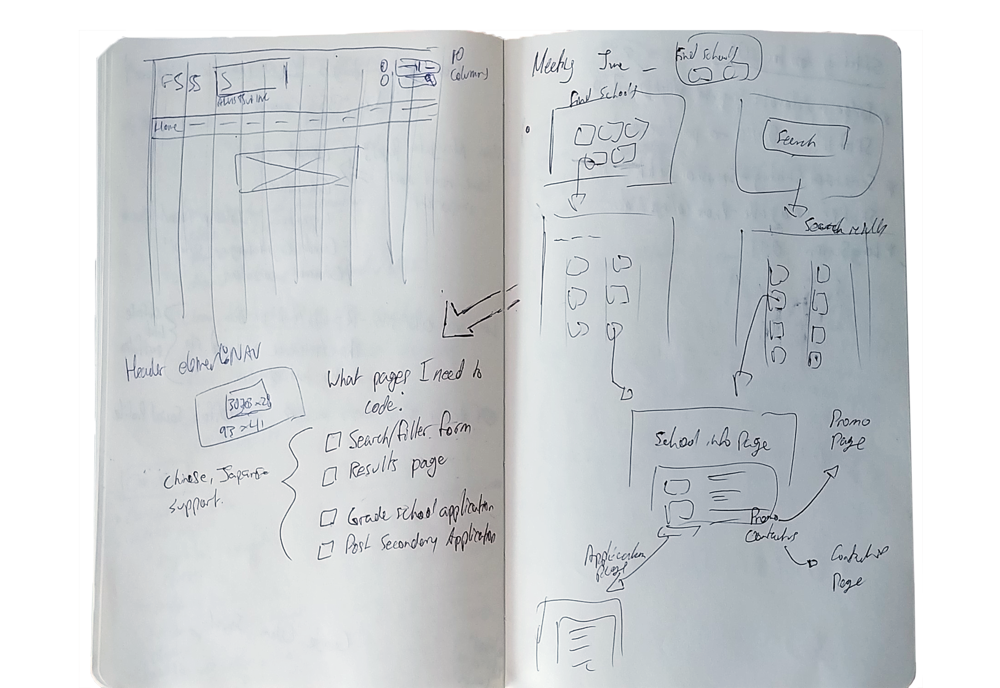
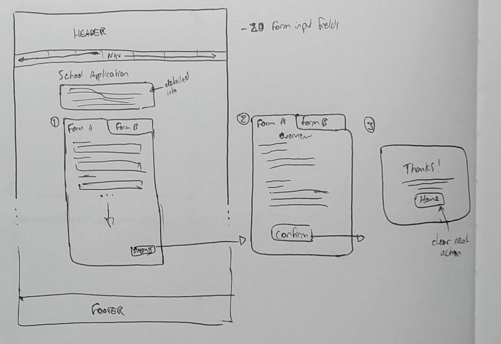

I designed and developed a search interface, database, and web form to enhance the web presence of FSS and transition their customer experience from telephone to the Internet.
Check out the completed work here!
Web Form School SearchTools
- Axure RP
- Adobe Illustrator
- HTML5
- CSS3
- Javascript
- PHP3
- SQL
Context
FSS advises and supports international students intending to and currently studying in Canada with their large network of connections to schools across the country.
Problem
FSS relies on phone and in-person meetings to do business with all current and potential customers. How can FSS connect to new customers and provide them with their detailed information about schools in Canada clearly through digital platforms?
Process
User Flow
I worked with the marketing team to define every scenario they wanted the tools I developed to be able to fix and suggested various types of complementary search tools. However, it became clear after providing sketched user-flows and rough mock-ups in the prototyping tool Axure that a simpler search tool would provide more value and keep site navigation clearer.
View larger
Wireframing sketches
Chunking Information
The list of information required on the application forms grew and I realized that my early form designs would be too much information all at once for users. I found the best way to organize the information was to chunk the form fields into a logical flow to make the application process clear to users.
View larger
Early wireframe and flow sketches of application form.
View larger
UI sketches of potential options for managing information.
Self-learning
I was hired to complete this project on my own so I balanced continuing progress on the project as a whole and learning new skills that would be essential for successful implementation in my 4 month deadline. I used front-end languages like HTML, CSS and Javascript with the JQuery library to make responsive web form and search interface pages. I also taught myself how to use PHP and SQL to implement the form processing and database architecture of these features.
View larger

Sample of PHPMailer script I implemented after learning more about PHP and JQuery.
Reflection
Through this project I learned how to rely on my ability to self-learn new skills as the project scope expanded so that I wouldn’t be limited to the tools I had available to use. I gained more experience in HTML5, CSS3, PHP, JQuery, SQL, and the Bootstrap framework. I developed user flows and sitemaps to keep a strong grasp of users’ needs to guide my design decisions and used these tools to communicate it to others not trained in UX so that I could make others understand the logic behind the design decisions I made.
View larger
The final implementation of the application form.
View larger
The final implementation of the school search interface.